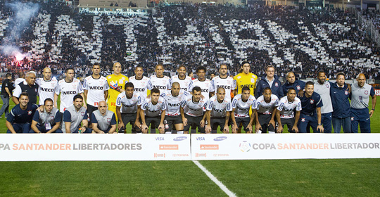

História do Sport Club Corinthians Paulista

Década de 1910
1910 – A fundação
Às 20h30 do dia 1º de setembro, à luz de um lampião, na esquina das ruas José Paulino e Cônego Martins, no bairro do Bom Retiro, um grupo de operários fundou o Sport Club Corinthians Paulista. O nome foi inspirado na equipe inglesa Corinthian Football Club, que fazia excursão pelo Brasil.
O presidente escolhido foi o alfaiate Miguel Battaglia, que afirmou: “O Corinthians vai ser o time do povo e o povo é quem vai fazer o time”.
1913 – Estreia no Paulista
Pela primeira vez, o Corinthians participou do campeonato da Liga Paulista de Futebol, terminando em quarto lugar entre cinco equipes.
1914 – O primeiro título
Primeiro título do clube. Com 10 vitórias em 10 jogos e 37 gols marcados, o Timão conquistou o Campeonato Paulista com uma rodada de antecedência. O atacante Neco foi o artilheiro, com 12 gols.
No dia 08 de novembro, a equipe derrotou o Campos Elyseos por 4 a 0 com a seguinte escalação:
Aristides, Fúlvio e Casemiro González; Police, Bianco e César Nunes; Américo, Peres, Amílcar, Apparício e Neco.
1918 – O primeiro estádio
Em suas horas de folga, os jogadores construíram o gramado do primeiro estádio oficial corinthiano, o Ponte Grande, que ficava onde hoje é a Ponte das Bandeiras, na Marginal Tietê.
Década de 1920
1922 – Centenário da Independência
O Corinthians foi campeão paulista no ano do Centenário da Independência do Brasil, vencendo o Paulistano por 2 a 0.
1924 – O primeiro tri
O Alvinegro conquistou o primeiro tricampeonato paulista, garantido com uma vitória sobre o Paulistano por 1 a 0.
1928 – A Fazendinha
No dia 22 de julho, o Parque São Jorge foi reinaugurado no empate em 2 a 2 contra o América-RJ. No final do ano, o clube voltou a conquistar o Paulista.
1929 – Mosqueteiro
O Alvinegro foi campeão paulista com 100% de aproveitamento: sete vitórias em sete jogos. No mesmo ano, venceu sua primeira partida internacional, 3 a 1 sobre o Barracas (ARG).
O jornalista Thomaz Mazzoni, de A Gazeta, destacou a “fibra de mosqueteiro” dos jogadores, e o jornal passou a chamar o Timão de Mosqueteiro.
Década de 1930
1930 – O campeão dos campeões
O Timão fechou a década com seis conquistas do Paulista em 10 disputados. Depois, venceu o Vasco, campeão carioca, por 3 a 2 e passou a ser chamado de “Campeão dos Campeões”.
1937 a 1939 – Mais um tri
O Corinthians foi campeão paulista em 1937, 1938 (de forma invicta) e 1939. Até hoje, nenhum clube venceu mais de três vezes seguidas o Campeonato Paulista.
Década de 1940
1940 – Pacaembu
No dia 28 de abril, o Timão inaugurou o estádio do Pacaembu, vencendo o Atlético-MG por 4 a 2.
Década de 1950
1950 – O primeiro Rio-São Paulo
Com 20 gols em sete jogos, o Timão conquistou o primeiro Torneio Rio-São Paulo de sua história, com um empate em 1 a 1 contra o Botafogo no Pacaembu.
1954 – IV Centenário
O Alvinegro foi campeão paulista no ano do quarto centenário da cidade de São Paulo, além de vencer o Torneio Rio-São Paulo e o Torneio Charles Miller.
1959 – Inesquecível
Vicente Matheus foi eleito presidente do Sport Club Corinthians Paulista e ficou no Timão durante oito mandatos.
Década de 1970
1976 – Invasão Corinthiana
Cerca de 80 mil corinthianos viajaram até o Rio de Janeiro para ver o Corinthians empatar com o Fluminense por 1 a 1, vencer nos pênaltis (4 a 1) e chegar à decisão do Campeonato Brasileiro. É um dos maiores deslocamentos pacíficos do mundo.
1977 – Fim do Jejum
Depois de 22 anos, oito meses e sete dias, o Corinthians era novamente campeão paulista. Basílio marcou o gol da vitória por 1 a 0 sobre a Ponte Preta, no Morumbi, no dia 13 de outubro. O estádio registrou seu maior público: 146.072 pessoas.
Década de 1980
1982 – Democracia Corinthiana
Embalado pelos ideais da Democracia Corinthiana, o Timão foi campeão paulista. O movimento visava maior participação dos jogadores e funcionários nas decisões do clube e contou com nomes como Sócrates, Casagrande, Zenon, Biro-Biro, Zé Maria e Wladimir.
1983 – Goleada histórica
O Corinthians foi bicampeão paulista e aplicou a maior goleada da história do Campeonato Brasileiro: 10 a 1 no Tiradentes-PI.
Década de 1990
1990 – Campeão brasileiro
No dia 16 de dezembro, o Timão levantou o troféu de campeão brasileiro pela primeira vez, vencendo o São Paulo por 1 a 0 no Morumbi. Neto marcou nove dos 23 gols da equipe. A escalação da final foi:
Ronaldo, Giba, Marcelo, Guinei e Jacenir; Márcio, Wilson Mano e Tupãzinho; Neto, Fabinho e Mauro.
1995 – Campeão de tudo
O Corinthians foi campeão da Copa São Paulo de Juniores, do Campeonato Paulista e da Copa do Brasil, vencendo o Grêmio na final: 2 a 1 em casa e 1 a 0 em Porto Alegre.
1998 e 1999 – Bicampeão brasileiro
Em 1998, o Timão venceu o Cruzeiro por 2 a 0 na última partida e foi campeão brasileiro, com Marcelinho Carioca como artilheiro (19 gols). Em 1999, levou mais um Paulista e, pelo segundo ano seguido, o Brasileiro, com Luizão marcando 21 gols.
Década de 2000
2000 – O primeiro Mundial
O primeiro título mundial de clubes reconhecido pela Fifa veio com uma vitória nos pênaltis contra o Vasco, depois do empate sem gols no tempo normal. O segundo gol de Edílson no empate em 2 a 2 contra o Real Madrid é considerado um dos mais marcantes da história corinthiana.
2002 – Ano fantástico
Sob o comando de Carlos Alberto Parreira, o Timão foi campeão do Rio-São Paulo em cima do São Paulo e, três dias depois, conquistou a Copa do Brasil pela segunda vez contra o Brasiliense.
2005 – Campeão galático
Com um elenco de estrelas, o Corinthians conquistou o tetracampeonato brasileiro. Tevez marcou 20 gols e foi eleito o melhor jogador da competição. Um dos duelos mais memoráveis foi o 7 a 1 em cima do Santos.
2007 – O pior episódio da história
No pior ano da história do clube, o Timão foi rebaixado para a série B do Campeonato Brasileiro.
2008 – O Coringão voltou!
Sob a liderança do técnico Mano Menezes, o Corinthians conquistou a série B com quatro rodadas de antecedência e marcou 79 gols em 38 jogos.
2009 – Ano fenomenal
Ronaldo, o Fenômeno, foi o principal nome do ano. O Timão foi campeão paulista de forma invicta contra o Santos e, em julho, conquistou a Copa do Brasil sobre o Internacional.
Década de 2010
2010 – Centenário Corinthiano
No dia 1º de setembro, mais de 100 mil corinthianos lotaram o Anhangabaú para comemorar o centenário do clube. Em novembro, Ronaldo Fenômeno marcou o último gol de sua carreira, de pênalti, na vitória por 1 a 0 sobre o Cruzeiro.
2011 – Pentacampeonato brasileiro
Em um empate sem gols contra o seu maior rival, o Timão conquistou, pela quinta vez, o Campeonato Brasileiro, com uma excelente defesa e muita regularidade.
2012 – O ano inesquecível!
Pela primeira vez na história, o Corinthians foi campeão da Libertadores, e de forma invicta! Emerson marcou os dois gols da vitória por 2 a 0 contra o Boca Juniors (ARG) na final. A escalação da partida foi:
Cássio, Alessandro, Chicão, Leandro Castán e Fábio Santos; Ralf, Paulinho, Danilo e Alex; Jorge Henrique e Emerson.
O gol de cabeça de Paulinho contra o Vasco é considerado por muitos o mais marcante da história do clube. Em dezembro, no Japão, Guerrero marcou de cabeça e garantiu o título do Mundial de Clubes da Fifa contra o Chelsea.
2013
O Timão conquistou o Paulistão contra o Santos, chegando ao 27º título, e a Recopa Sul-Americana contra o São Paulo.
2014
No dia 19 de maio, na partida contra o Figueirense pelo Campeonato Brasileiro, aconteceu a inauguração da Arena Corinthians, casa da Fiel desde então.
2015
Com a volta do técnico Tite, o Corinthians conquistou o sexto título brasileiro, com 81 pontos, a melhor campanha da história dos pontos corridos com 20 clubes. O título foi confirmado no empate em 1 a 1 com o Vasco, e na rodada seguinte o Timão goleou o São Paulo por 6 a 1 na entrega da taça.
2017
Na primeira temporada de Fábio Carille, o Timão conquistou o 28º título paulista e o 7º Brasileirão. No campeonato nacional, foram 34 jogos sem perder, a segunda maior série invicta da história do clube.
2018 e 2019
Em 2018, o Corinthians voltou a ser bicampeão paulista após 35 anos, batendo o Palmeiras em pleno Allianz Parque. Em 2019, foi tricampeão paulista, após 80 anos, vencendo o São Paulo na Arena Corinthians e levantando o seu 30º campeonato estadual.
Década de 2020
2025 – O título do Derby em casa e o Tetra da Copa do Brasil
Com recorde de público na Neo Química Arena, o Timão empatou por 0 a 0 com o Palmeiras e levantou o 31º título do Paulistão. Na Copa do Brasil, venceu o Vasco por 2 a 1 no Maracanã e conquistou o quarto caneco da competição.
2026 – SuperBiCampeão!
A temporada começou com título logo na primeira decisão: depois de 35 anos, Corinthians e Flamengo se reencontraram na Supercopa do Brasil. Assim como em 1991, deu Timão, com o 2 a 0 no estádio Mané Garrincha, em Brasília, que garantiu o bicampeonato do torneio.
Visite o site do Memorial Corinthians e saiba mais:
https://www.corinthians.com.br/memorialcorinthians/
Tags: História